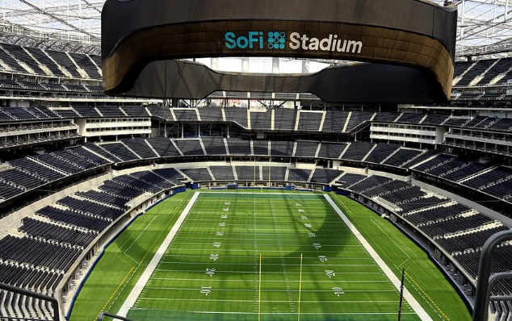
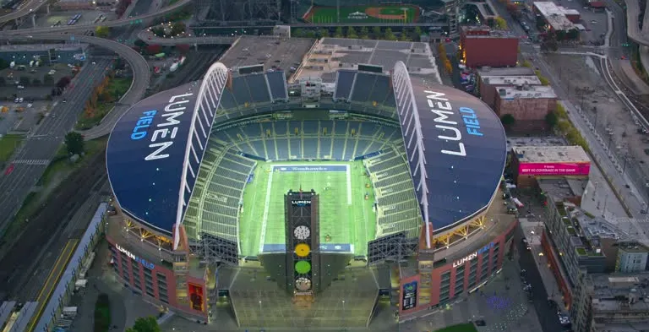
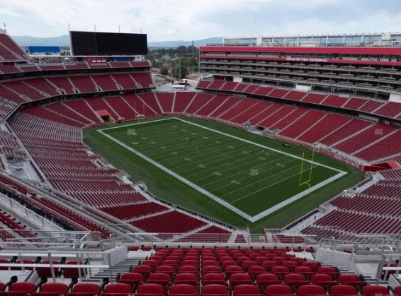
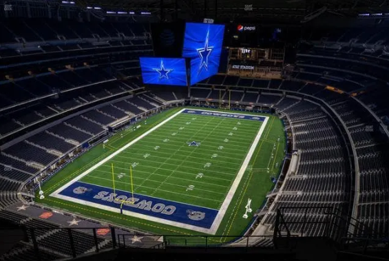
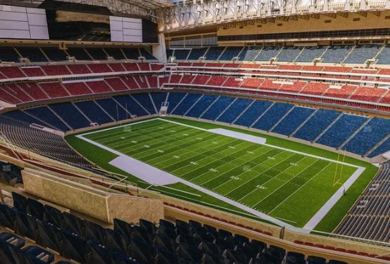

GRUPO F
Cuatro selecciones, un mismo sueño.
Solo dos avanzarán.


Los partidos clave se disputarán en grandes escenarios norteamericanos.

SoFi Stadium
70,000
Lumen Field
69,000
Levi's Stadium
68,500
AT&T Stadium
80,000
NRG Stadium
72,000
Tres veces subcampeón del mundo y protagonista histórico.
Buscando romper la barrera de los octavos de final.
Subcampeón en 1958, regresa con una propuesta sólida.
Las Águilas de Cartago van por su histórica primera fase final.
Clasificó invicto liderando su grupo en las eliminatorias de la UEFA.
Dominio absoluto en Asia, asegurando su lugar con varias jornadas de anticipación.
Consiguió su boleto mediante un emocionante repechaje europeo continental.
Clasificó tras una sólida campaña defensiva en las eliminatorias de la CAF.
PAÍSES BAJOS
VS.
JAPÓN
SoFi Stadium (Los Ángeles)
TÚNEZ
VS.
SUECIA
Lumen Field (Seattle)
SUECIA
VS.
JAPÓN
Levi's Stadium (Santa Clara)
PAÍSES BAJOS
VS.
TÚNEZ
AT&T Stadium (Dallas)
SUECIA
VS.
PAÍSES BAJOS
NRG Stadium (Houston)
JAPÓN
VS.
TÚNEZ
SoFi Stadium (Los Ángeles)
La disciplina táctica de Japón contra la mítica "Naranja Mecánica" neerlandesa.
Suecia y Japón se vuelven a cruzar en un torneo internacional de primer nivel.
Suecia quiere repetir las grandes hazañas de sus mejores años mundialistas.
Túnez buscará dar la gran sorpresa del grupo frente a los gigantes europeos.
Tres continentes representados con propuestas futbolísticas completamente distintas.